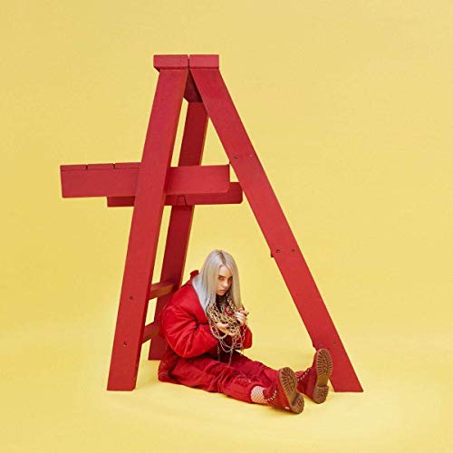
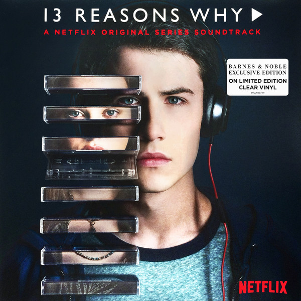
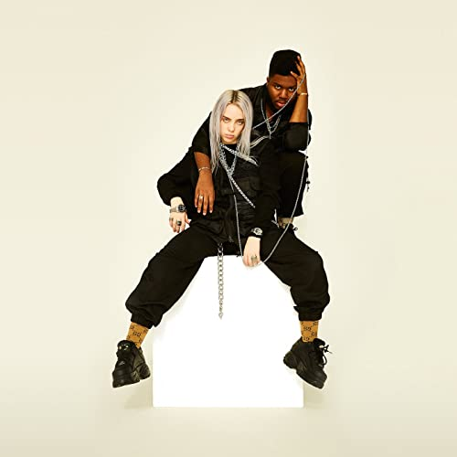
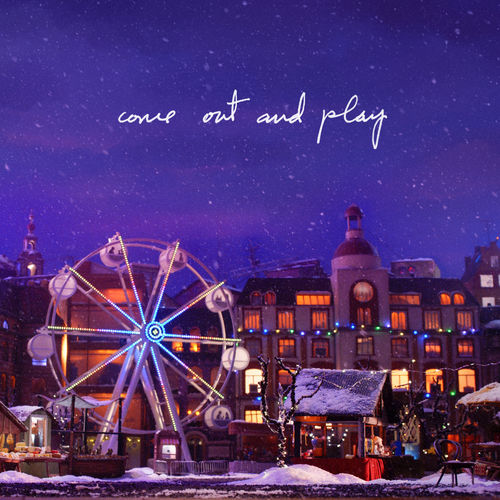
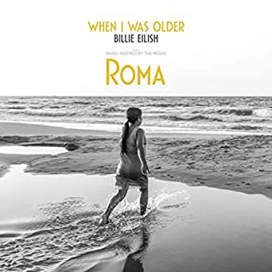
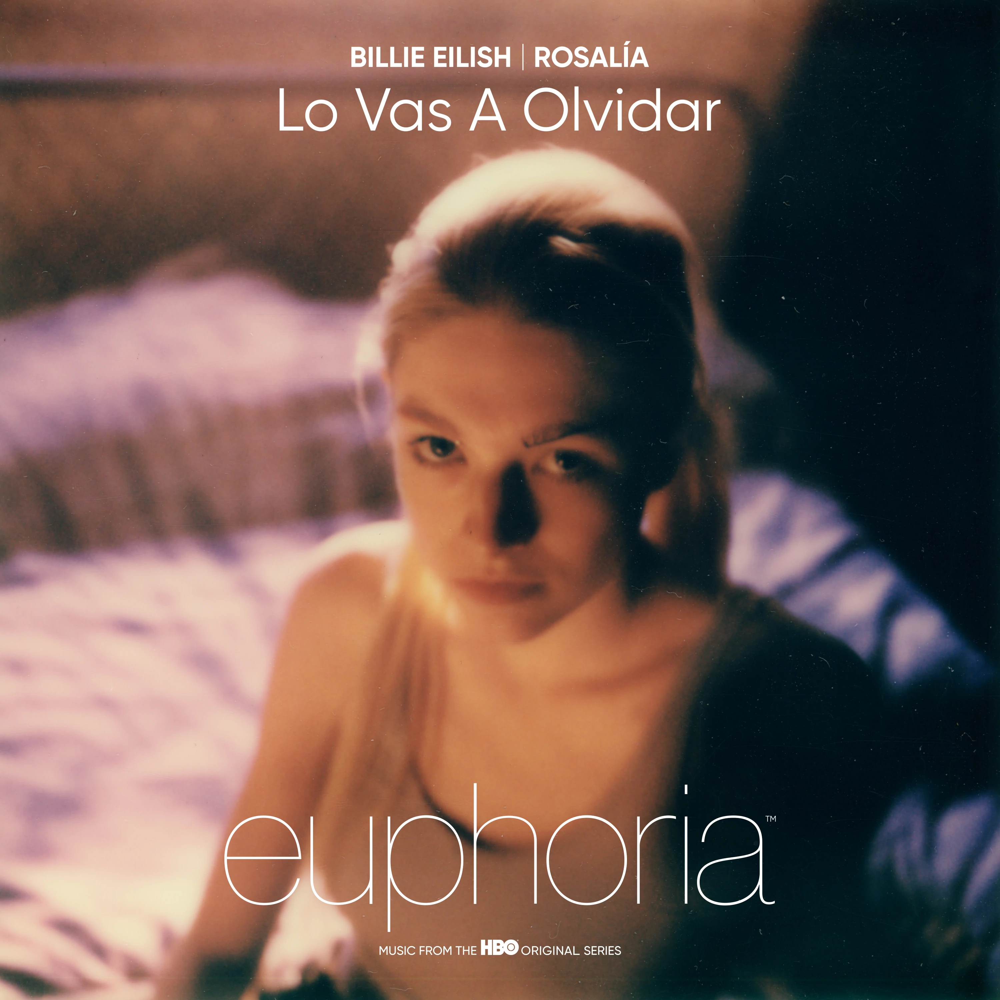

Billie Eilish
Inicio
Grammys
Discografía
Youtube
Registro
Contacto
Discografía
Six Feet Under
2016

Dont Smile At Me
2017

Bored
2017
Bitches Broken
Hearts
2018

Lovely
2018

Come Out And
Play
2018

When I Was
Older
2019
When We All Fall
Asleep, here Do We Go?
2019
No Time To
Die
2020

Lo Vas A Olvidar
2021
Happier Than
Ever
2021